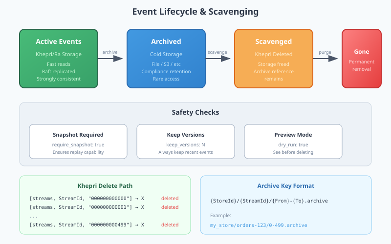

Scavenging and Event Lifecycle
View SourceScavenging is the process of removing old events from streams to reduce storage costs while maintaining stream integrity. This guide covers the server-side implementation, safety guarantees, and archival strategies.
Overview
The reckon_db_scavenge module provides:
| Function | Purpose |
|---|---|
scavenge/3 | Remove old events from a single stream |
scavenge_matching/3 | Scavenge streams matching a pattern |
archive_and_scavenge/4 | Archive events before deletion |
dry_run/3 | Preview what would be deleted |
Architecture

Event Lifecycle
Events in reckon-db follow this lifecycle:
┌──────────┐ ┌──────────┐ ┌──────────┐ ┌──────────┐
│ Active │ ──▶ │ Archived │ ──▶ │ Scavenged│ ──▶ │ Deleted │
│ (Khepri) │ │ (Backend)│ │ (Marked) │ │ (Gone) │
└──────────┘ └──────────┘ └──────────┘ └──────────┘
│ │ │ │
│ Hot storage │ Cold storage │ Reference │ Permanent
│ Fast reads │ Slow reads │ only │ removalSafety Guarantees
Snapshot Requirement
By default, scavenging requires a snapshot to exist:
%% This will fail if no snapshot exists
{error, {no_snapshot, <<"orders-123">>}} =
reckon_db_scavenge:scavenge(my_store, <<"orders-123">>, #{
before_version => 100
}).
%% Override the safety check (use with caution)
{ok, _} = reckon_db_scavenge:scavenge(my_store, <<"orders-123">>, #{
before_version => 100,
require_snapshot => false
}).Why this matters: Without a snapshot, replaying to a historical state requires all events from version 0. Scavenging old events without a snapshot breaks replay capability.
Keep Versions
Always keep a minimum number of recent versions:
%% Keep at least the last 10 versions, regardless of timestamp
{ok, Result} = reckon_db_scavenge:scavenge(my_store, <<"orders-123">>, #{
before => OneYearAgo,
keep_versions => 10
}).Dry Run
Preview what would be deleted before actually deleting:
{ok, Preview} = reckon_db_scavenge:dry_run(my_store, <<"orders-123">>, #{
before => RetentionCutoff
}),
%% Preview contains:
%% #{
%% stream_id => <<"orders-123">>,
%% deleted_count => 500,
%% deleted_versions => {0, 499},
%% archived => false,
%% dry_run => true
%% }Scavenge Options
-type scavenge_opts() :: #{
before => integer(), %% Delete events before this timestamp (epoch_us)
before_version => integer(), %% Delete events before this version
keep_versions => pos_integer(),%% Keep at least N latest versions
require_snapshot => boolean(), %% Require snapshot exists (default: true)
dry_run => boolean() %% Preview only (default: false)
}.Timestamp-Based Scavenging
%% Delete events older than 1 year
OneYearAgo = erlang:system_time(microsecond) - (365 * 24 * 60 * 60 * 1000000),
{ok, Result} = reckon_db_scavenge:scavenge(my_store, <<"orders-123">>, #{
before => OneYearAgo
}).Version-Based Scavenging
%% Delete events before version 1000
{ok, Result} = reckon_db_scavenge:scavenge(my_store, <<"orders-123">>, #{
before_version => 1000
}).Khepri Storage Operations
How Events Are Deleted
Events are deleted individually from Khepri:
delete_event_versions(StoreId, StreamId, FromVersion, ToVersion) ->
lists:foreach(
fun(Version) ->
PaddedVersion = pad_version(Version, ?VERSION_PADDING),
Path = ?STREAMS_PATH ++ [StreamId, PaddedVersion],
khepri:delete(StoreId, Path)
end,
lists:seq(FromVersion, ToVersion)
).Storage path structure:
[streams, <<"orders-123">>, <<"000000000000">>] -> Deleted
[streams, <<"orders-123">>, <<"000000000001">>] -> Deleted
...
[streams, <<"orders-123">>, <<"000000000499">>] -> Deleted
[streams, <<"orders-123">>, <<"000000000500">>] -> Kept (after cutoff)Cluster Behavior
Deletions are replicated through Ra consensus:
- Delete request received on any node
- Request forwarded to Ra leader
- Leader appends delete to Raft log
- Followers replicate and apply
- Quorum achieved, deletion confirmed
Important: Deletions are permanent once committed to the Raft log.
Archival
Archive Before Delete
Use archive_and_scavenge/4 to preserve events before removal:
%% Initialize file backend
{ok, BackendState} = reckon_db_archive_file:init(#{
base_path => "/bulk0/archives/reckon_db"
}),
%% Archive then scavenge
{ok, Result} = reckon_db_scavenge:archive_and_scavenge(
my_store,
<<"orders-123">>,
{reckon_db_archive_file, BackendState},
#{before => RetentionCutoff}
),
%% Result includes archive key
%% #{
%% stream_id => <<"orders-123">>,
%% deleted_count => 500,
%% deleted_versions => {0, 499},
%% archived => true,
%% archive_key => <<"my_store/orders-123/0-499.archive">>
%% }Archive Key Format
Archive keys follow a standard format:
{StoreId}/{StreamId}/{FromVersion}-{ToVersion}.archive
Examples:
my_store/orders-123/0-999.archive
my_store/users-456/1000-1999.archiveCustom Archive Backends
Implement the reckon_db_archive_backend behaviour:
-callback init(Opts :: map()) ->
{ok, State :: term()} | {error, Reason :: term()}.
-callback archive(State, ArchiveKey, Events) ->
{ok, NewState} | {error, Reason}.
-callback read(State, ArchiveKey) ->
{ok, Events, NewState} | {error, Reason}.
-callback list(State, StoreId, StreamId) ->
{ok, [ArchiveKey], NewState} | {error, Reason}.
-callback delete(State, ArchiveKey) ->
{ok, NewState} | {error, Reason}.
-callback exists(State, ArchiveKey) ->
{boolean(), NewState}.Built-in backends:
reckon_db_archive_file- Local file system storage
Pattern Matching
Scavenge multiple streams at once:
%% Scavenge all order streams
{ok, Results} = reckon_db_scavenge:scavenge_matching(my_store, <<"orders-*">>, #{
before => RetentionCutoff,
keep_versions => 10
}).
%% Results is a list of scavenge_result() for each matching streamSupported patterns:
orders-*- Prefix match*-completed- Suffix matchorders-*-v2- Multiple wildcards
Telemetry
Scavenge operations emit telemetry:
%% Event: [reckon_db, scavenge, complete]
%% Measurements:
%% #{duration => integer(), deleted_count => integer()}
%% Metadata:
%% #{store_id => atom(), stream_id => binary(), archived => boolean()}Best Practices
1. Always Preview First
%% Preview
{ok, Preview} = reckon_db_scavenge:dry_run(Store, Stream, Opts),
io:format("Would delete ~p events~n", [maps:get(deleted_count, Preview)]),
%% Then execute
{ok, Result} = reckon_db_scavenge:scavenge(Store, Stream, Opts).2. Snapshot Before Scavenging
%% Save current state as snapshot
{ok, Events} = reckon_db_streams:read(Store, Stream, 0, Version, forward),
State = rebuild_state(Events),
ok = reckon_db_snapshots:save(Store, Stream, Version, State, #{}),
%% Now safe to scavenge
{ok, _} = reckon_db_scavenge:scavenge(Store, Stream, #{
before_version => Version
}).3. Archive for Compliance
For audit requirements, always archive before scavenging:
%% 7-year retention in cold storage
{ok, _} = reckon_db_scavenge:archive_and_scavenge(
Store, Stream,
{reckon_db_archive_s3, S3State}, %% Custom S3 backend
#{before => SevenYearsAgo}
).4. Schedule Off-Peak
Run scavenging during low-traffic periods:
%% Example: Run at 3 AM daily
schedule_scavenge() ->
timer:apply_after(
time_until_3am(),
fun() ->
scavenge_old_streams(),
schedule_scavenge() %% Reschedule
end
).Error Handling
| Error | Cause | Resolution |
|---|---|---|
{error, {no_snapshot, StreamId}} | Snapshot required but missing | Save snapshot first |
{error, {stream_not_found, StreamId}} | Stream does not exist | Verify stream ID |
{error, archive_failed} | Archive backend error | Check backend logs |
See Also
- Temporal Queries - Time-based event retrieval
- Snapshots - State caching
- Storage Internals - Khepri path structure